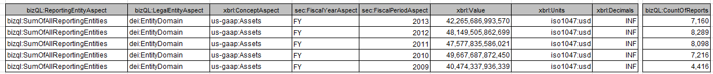
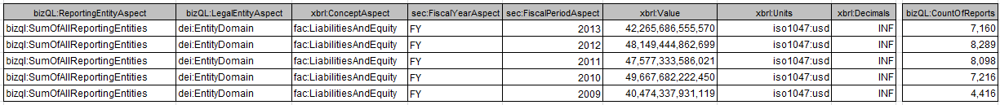
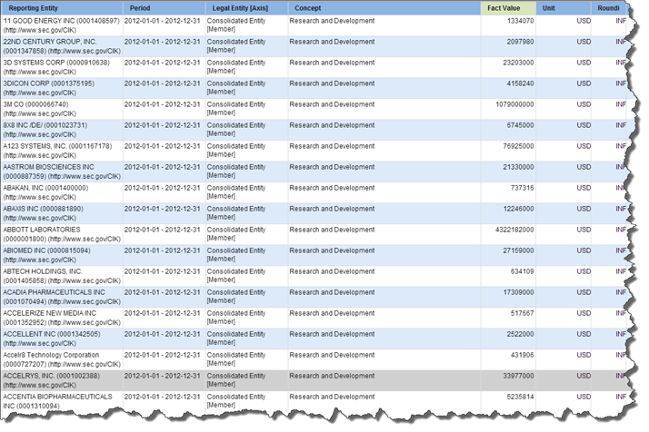
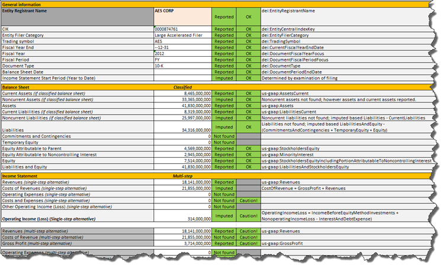
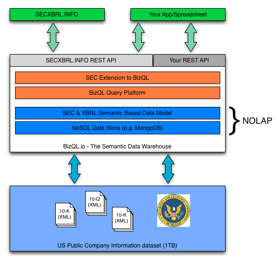

Financial Information Repository
by
Dr. Matthias Brantner, CTO
Dr. Ghislain Fourny
Dennis Knochenwefel
28msec, Inc.
m@28.io, g@28.io,, d@28.io
February 2014
What will I find here? The purpose of this document is to explain what the US Public Company Financial Information Repository is, and what 28msec is trying to achieve by creating this repository. This document is intended for both business users and technical engineers who are trying to understand world-class approaches to exchanging business information. |
Table of Contents
Visionary introduction on BizQL.io
Structure of the remainder of this document
BizQL.io's Business-Value Adding Features
Feature #1: Query Performance/Speed
Feature #2: Query Sophistication
Feature #3: Specify/Create your own Components
Specifying rules to compute non-reported facts
Feature 4: Application Profiles
The US Public Company Financial Information Repository
The BizQL Business Reporting Platform (http://www.bizql.io):
28.io Information Processing and Query platform (http://www.28.io/):
JSONiq (http://www.jsoniq.org/) and NoSQL:
NOLAP (NoSQL OnLine Analytical Processing):
The US Public Company Financial Information Repository is a database of US public company financial information. US Companies are required to submit reports, such as yearly (10-K) and quarterly financial reports (10-Q), to the US Securities and Exchange Commission (SEC). Since recently, these reports must be submitted using the globally standardized XBRL technical syntax.
However, such data is only valuable if it can be queried -- just like raw meteorological data is useless if nobody can turn it into understandable weather forecasts.
All 10-K and 10-Q XBRL filings that were submitted to the SEC by public companies were parsed, semantically processed, transformed and finally organized in a form that maximizes its queryability by business users, both in terms of productivity (quick to write) and performance (quick to execute) -- leading to a shorter time-to-market (quicker than competitors).
The queries are performed using an easy-to-use, yet very powerful and sophisticated query language that was created specifically for this purpose. The underlying platform uses state-of-the-art and highly-optimized database technologies running in the cloud. Finally, a REST API allows developers to access and query the data programmatically from anywhere they see fit.
The SECXBRL.info Web site demonstrates how easy this querying framework can be used to build an XBRL analytics front-end with a very short time to market. SECXBRL.info is only one of the many examples of what can be achieved.
By no means do we directly compete with SEC analytics Web sites such as xbrlcloud.com or calcbench.com. Rather, we provide a powerful, underlying querying platform, on top of which any of these Web sites could be built or rebuilt from scratch in just a couple of weeks, with newly submitted SEC data being freshly delivered to their door every day.
Data is a very old concept. There was already data in prehistorical times, such as Greek epic battles, that were exchanged and transmitted orally over hundreds of generations. Then data got written manually (3500 BC), printed by machines (1451), and finally stored as bits of information (1837), from cards to now just USB sticks or even smartphones and watches.
One of the major revolutions in databases was the emergence or relational databases in the 60s and 70s -- Oracle is probably the most famous enabler in that regard. Data was made queryable by storing it in homogeneous tables -- typically like a list of persons with names, addresses, cities, etc stored in an Excel document. The standardized SQL language is the most prominently known language to query tables of data.
At the beginning of the 2000s though, as dramatically increasing amounts of data got created and stored every year, it became clear that homogeneous tabular storage is not good enough. Real-world data is not tabular. Real-world data is not homogeneous. Hence, a new generation of databases, informally called NoSQL, emerged, in which data is stored in arborescent form, and with much less constraints.
Imagine that, in 2013, the amount of data created is roughly five (5!) times EVERYTHING that has ever been created by humanity until 2012. And this data is not in homogeneous, tabular form. It is crucial to have the necessary tools for querying it.
Query language design is like clockwork. A useful query language must be built on strong theoretical foundations. One of the most important ideas behind a good language is that it is enough for a user to tell the computer what he wants. The details of how it is obtained is left to the computer -- and to decades of research in query optimization. Such a language is called a declarative language. Easy to use for the business user, the burden is put on the IT engineers and researchers that program the computer.
The potential for optimization of a declarative language (like SQL, but also like the latest ones) is virtually only limited by human imagination. As of now, computers are able to rewrite queries so that they run faster. For some queries (real-world queries!), computers are able to automatically split the work between several of them.
With cloud technologies, a user can ask for computing power on demand. One machine might execute a query in one day. Open the tap and ask 10,000 machines instead, and you will get the result in less than 10 seconds. In plain old business dollars, the cost is exactly the same regardless of the number of machines used (100,000 machine-seconds). Except that Less Than Ten Seconds Inc. is going much faster to market than One Machine For A Whole Day llc.
SEC data is no different than any other data. Database and query technologies can directly be applied to query it and transform it into actionable information. Now that the SEC made it mandatory to submit data in the standardized XBRL format, it is only logical to take this data, put it in a repository using the latest database technologies, and efficiently query it. The power of today's query languages puts no limits on what a business user can ask for, if all the necessary raw data is available. Technical people call these languages "Turing-complete", as a tribute to IT pioneer Alan Turing, who researched on what can be computed and what not.
BizQL.io is built on, and inspired by modern database technologies, including all the lessons learnt from SQL. Users can write queries against the SEC database and ask for all the financial information they want.
How many dollars do all US companies own in assets, total? What is the DOW 30 company with the highest profit compared with its costs? How many banks recovered the amount, in USD, of the assets they had before the crisis? What is the percentage of S&P 500 companies whose Christmas peak revenues are at least double those of the rest of the year? No problem with BizQL. BizQL.io was designed so that the query is easy to write. The underlying platform was designed so that optimizations occur behind the hood.
With the generalization of reporting standards, and the use of enabling database technologies, the world is going to be more transparent than ever. It has been several decades already that access to raw data was easy (like somebody's address). Now, access to computed, derived, actionable information is becoming easy as well -- because the complexity is handled by the underlying technologies. And, even without changing the queries, it will only get faster as technology evolves and new optimization ideas pop up.
Very soon, there will be no excuse anymore for a CEO or a financial analyst to say "Oh, but I did not know that!", when the answer was just a query and the push of a button away.
We start with a guided tour of the SECXBRL.info front-end, which serves as an illustration of what can be achieved on top of this BizQL.io querying platform.
We then show what kind of BizQL queries can be executed on the BizQL.io platform, via a REST API called by a front-end (the source code for the BizQL queries themselves is not shown -- it will be in a separate document that specifically targets technical people).
We finally explain the overall architecture and put it in perspective with modern technologies (NoSQL, NOLAP).
There are three interfaces to the US Public Company Financial Information Repository.
First there is a very, very basic business user interface which helps a business user understand what is in the information repository and how it is organized: http://secxbrl.info/.
For example, the basic interface allows you to browse filings as well as look at the model structure or fact table of a single component. Furthermore, you can do basic analysis of an entity over time (Net Income vs. Revenue) or look at basic financial information of a particular quarter.
Second, included with the business user GUI is a REST based API for software developers. That interface provides a REST-style web service interface which provides computer readable formats for the entire system in the JSON, XML and CSV syntaxes. That interface can be used leveraging standard Internet technologies.
For example, this interface allows you to retrieve all the information that is available in the graphical interface describe above. Additionally, it allows you to search and retrieve facts across entities and filings.
The interface is described at http://secxbrl.info/api together with examples that make it easy to use.
Third, there is an integrated development environment (IDE) which both developers and business users who have some programming skills can use. This IDE allows developers and semi-technical business users to interact with the US Public Company Financial Information Repository directly. Not a lot of programming skills are required, if you are comfortable writing VBA in Excel, you will be able to make good use of this IDE. High-level functions are exposed which make it both easy to use the IDE but also very powerful. But also, don’t be fooled by the simplicity of the IDE. The IDE is simple, not simplistic. The IDE is simple because the functions and query language, BizQL-EDGAR, are tuned to the system, to the specific application profile.
To give you an idea how fast the BizQL.io platform is, we executed the following query: “Give me the sum of all values reported against the concept ‘us-gaap:Assets’, on all SEC XBRL financial filings, aggregated by FiscalPeriod.”
The following link (which you can use) shows you the results of this query, in XML format, exposed via a REST API.
Query 1
And here is what the results look like rendered to be human readable (table):

This query takes approximately 4.6 seconds to execute. Why is it so fast? Here are the reasons:
All of this taken together results in an easy to use query language which is incredibly fast. The complexity of the information is absorbed by the underlying BizQL.io and 28.io platforms, exposing an easy to use and domain specific query language and great performance/speed to the user. Experience the speed for yourself by clicking here to execute the query on whatever US GAAP XBRL Taxonomy concept that you desire.
Don’t be fooled by the simplicity of our queries, the query engine is quite sophisticated but the complexity is hidden from users of the system. Here are a few examples:
Another important issue when querying SEC XBRL financial filings is that public companies can use many different US GAAP XBRL Taxonomy Concepts to represent reported information. In the first example we queried “us-gaap:Assets”. But consider this. Public companies use one of two concepts to report “Liabilities and Equity”:
us-gaap:LiabilitiesAndStockholdersEquity
us-gaap:LiabilitiesAndPartnersCapital
To overcome this situation, queries have the capability to interact with a mapping file. And so, a user could query the concept fac:LiabilitiesAndEquity, which then uses the mapping file and the query would use either of the concepts us-gaap:LiabilitiesAndStockholdersEquity or us-gaap:LiabilitiesAndPartnersCapital and would return a fact table which looks like the following:

The query can be executed with the following link:
Query 2
While the query above makes the point of why a mapping file is necessary, having only two concepts involved in the mapping may lead you to believe that such mappings are not important. If you consider that SEC XBRL financial filers use more than 45 different concepts to report “Revenues” you begin see the utility of built in mappings. The prototype Public Company Financial Information system has built in mappings for 51 fundamental accounting concepts (see http://fundamentalaccountingconcepts.wikispaces.com/) and users of the system can create their own mappings which are then leveraged by the query engine to give you the results you expect when running queries.
Consider a little more complex mapping, fac:ResearchAndDevelopment. These are the concepts used within SEC XBRL financial filings:
us-gaap:ResearchAndDevelopmentExpense
us-gaap:ResearchAndDevelopmentExpenseExcludingAcquiredInProcessCost
us-gaap:ResearchAndDevelopmentExpenseSoftwareExcludingAcquiredInProcessCost
us-gaap:ResearchAndDevelopmentInProcess
us-gaap:ResearchAndDevelopmentAssetAcquiredOtherThanThroughBusinessCombinationWrittenOff
Here is the same query, but on fac:ResearchAndDevelopment:
http://xbrl-msb.alpha.xbrl.io/v1/_queries/public/api/TotalForConceptGroupedByFiscalPeriodForAllEntities.jq?_method=POST&concept=fac:ResearchAndDevelopment&period=FY&map=FundamentalAccountingConcepts&format=xml
Query 3
secxbrl.beta.xbrl.io/v1/_queries/public/api/facts.jq?_method=POST&format=xml&concept=fac:ResearchAndDevelopment&map=FundamentalAccountingConcepts&fiacalPeriod=FY&fiscalYear=2012&tag=dow30
Here is what it returns in human-readable form:

You can see a full list of the built-in mappings that are provided by our platform at http://www.secxbrl.info/concept-map/FundamentalAccountingConcepts.
The first two queries showed you how you can query for individual reported facts from within a public company financial filing. But what if you want to query for an entire component of a financial report? Perhaps you want the balance sheets, income statements, cash flow statements, significant accounting policies, or some other report component so that you can compare the reported information.
For example, let us query the Long Term Debt Maturities disclosures of some reporting entities.
Query 4
<put query here>
Something like
http://secxbrl.xbrl.io/v1/_queries/public/api/facttable.jq?_method=POST&format=csv&cik=21344&fiscalPeriod=FY&fiscalYear=2011&disclosure=BalanceSheet
This is what the query looks like when returned (subset of the information):
The first query showed how to query for one concept, for example us-gaap:Asset.
The second and third query showed how to use a concept map to do meaning-oriented queries rather than straight semantic-type queries, where you look for fac:LiabilitiesAndEquity and all US GAAP XBRL Taxonomy concepts which are used to express that one fact are found.
The fourth query showed how to query for an entire component (SEC network) of a report, say query for the BalanceSheet or LongTermDebtMaturities, or other report components, of a given entity.
The feature we are now demonstrating pulls all of those together, and shows how to build your own report components, and then query by that user-defined report component.
Suppose you wanted to create a query which (i) grabs information across multiple report components and (ii) combines them into one component such as something like the fundamental accounting concepts. See: http://fundamentalaccountingconcepts.wikispaces.com/
In the process, you would also like the following to occur:
The cooking receipe for your own components looks as follows.
First, you specify the concepts you need. We will borrow an existing specification of these concepts which exists in XBRL and in an XML Infoset format which the XBRL.io system supports:
http://www.xbrlsite.com/2013/fac/
More specifically, this is the set of facts you desire to make use of:
http://www.xbrlsite.com/2013/fac/FundamentalAccountingConcepts_ModelStructure.xml
Second, you specify a mapping file between the concepts you want and the US GAAP XBRL Taxonomy concepts filers use. Again, we use an existing articulation of this information (you can use any such mapping on the Internet as long as the specified format is used):
http://www.xbrlsite.com/2013/fac/FundamentalAccountingConcepts_Map.xml
Third, you specify the business rules between the concepts. Again, a standard format is available which articulates these relations, XBRL Formula:
http://www.xbrlsite.com/2013/fac/FundamentalAccountingConcepts_Formulas.xml
We don’t support reading the XBRL Formulas currently (but this is being developed right now). So for now, we hard-code the relations and imputed values into an easy-to-create function within the system. The function has a very simple interface:
Query 5
Call the function which says to get the information for the most recent financial filing and you see the following in HTML or the same information is provided in XML, JSON, or CSV:

The most important take-home message here is that the model structure of the query, the concept maps and the business rules can be adapted at will. Business users can change these simple XML file (i.e. you don’t need programmers to change software) and the query changes…you can specify different concepts to extract, different mappings to US GAAP XBRL Taxonomy concepts, change the relations, etc.
(NOTE: For this prototype changing the relations is not supported because the XBRL Formulas are read manually currently, that aspect has not yet been automated. This should be 100% automated in the next release of the XBRL.io platform.)
A business user with only a little programming knowledge can even do more powerful queries with ease! All functions are written using the JSONiq query language which supports 100% of XQuery and provide additional functionality useful to business users but not provided by XQuery.
SECXBRL.info showcases how the XBRL-generic BizQL.io platform can be leveraged for SEC in order to easily create an analytics front-end. The core idea is that the powerful BizQL language can be used behind the scenes to create queries; These queries are exposed through a REST API, through which they can be executed efficiently; One single call of the REST API can return information, for example in form of (but not limited to) fact tables for existing, or user-defined components -- within just a few seconds; These fact tables can be finally be used by the front-end Web site and displayed in a human-friendly way.
Do not be too focused on how the US Public Company Financial Information Repository looks. This information repository is a pure example of what can be done, and is only the visible tip of the BizQL.io platform iceberg. But more importantly, you can build your own tips-of-the-iceberg, and you are only limited by your imagination.
The BizQL.io platform can be extended with many more application profiles than SEC: for example UK filings, FINREP reports, etc, etc. The XBRL principles apply, and 90% of the work has already been done in the XBRL-generic part of the platform.
We now dive into the details

The system has three important distinguishable layers. Starting at the business-facing top, all the way to down to the bottom:
This is a front-end implementation on top of BizQL.io, more precisely, on top of the SEC application profile. It is a very robust and performant prototype, and it was implemented in a very small amount of time and resources (just a few weeks and two persons).
The front-end communicates with the BizQL.io platform via a REST API. Concretely, it means that it issues requests over the HTTP protocol, for example:
This API is very simple and generic, and can be reused by other front-ends.
It can produce output in any format (JSON, XML, CSV, …).
Moreover, it is possible to design other APIs with more complex queries, depending on the needs of the front-end.
When the REST API is invoked, what happens behind the scenes is that a BizQL.io query gets executed. In this case, it is a BizQL.io query within the SEC application profile, meaning that it knows about the specificities of SEC filings.
The SEC XBRL financial filing system was chosen which was implemented as an application profile of the XBRL.io business reporting platform because it is a good and common implementation approach for making use of XBRL. It was also chosen because of all those SEC XBRL financial filings, they are a great way to test the implementation.
The XBRL generic profile was designed with two complementary approaches:
1. A careful understanding of the XBRL specifications (core, dimensions, variables, filters, etc), and an implementation of the generic part that is as compliant as possible.
2. Reverse Engineering from the US GAAP XBRL Taxonomy and SEC system implementation. However, we tuned the implementation, removing unsafe, ambiguous, and other aspects which cause problems. Basically, we learned from the SEC.
This is one implementation of the 28.io platform specifically tuned to work with XBRL. Not all forms of XBRL are supported. Currently tuples and typed dimensions are not supported. Neither are table linkbases.
We are evaluating whether these aspects of XBRL should be supported.
Basically XBRL.io allows for two things: (a) business users can use a “general profile” which is very comprehensive, very easy to use, no technical knowledge is required to implement a complete system or (b) a technical architect can either copy an existing application profile such as the general profile and “tweak” it to fit their specific needs or they could create their own application profile. There are certain boundaries such as you cannot use tuples or complex typed members. If you need those, you can use the 28.io platform.
The BizQL.io platform builds on top of the 28.io platform.
This is a very flexible information processing platform used by developers to build systems. With the JSONiq language, programmers can query (project, select, join, etc) across a vast number of data sources (MongoDB, JDBC, Cloudant, CloudSearch, graph databases, etc) with very little effort.
In spite of our focus on read-only queries, the 28.io platform also supports transactions.
The 28.io platform is able to distribute the execution of a query across several machines.
JSONiq is the language used by the 28.io (and the bizql.io) platform.
JSONiq was designed to query NoSQL data, i.e., heterogeneous, hierarchical data (like the XBRL data).
The main source of inspiration behind JSONiq is XQuery, which has been proven so far a successful and productive query language for semi-structured data (in particular XML). JSONiq borrowed a large numbers of ideas from XQuery, like the structure and semantics of a FLWOR construct, the functional aspect of the language, the semantics of comparisons in the face of data heterogeneity, the declarative, snapshot-based updates. However, unlike XQuery, JSONiq is not concerned with the peculiarities of XML, like mixed content, ordered children, the confusion between attributes and elements, the complexities of namespaces and QNames, or the complexities of XML Schema, and so on.
JSONiq, like XQuery, builds on the shoulders of the SQL giant: 90% of the features (project, select, join, etc) are very similar.
OLAP is a very common way of querying data organized in dimensions. Hypercubes of data can be sliced, diced, etc, like pivot tables in Excel.
It has several flavours: ROLAP (relational databases), MOLAP (hypercube in memory), etc.
We introduced the NOLAP flavour, which has the advantage of storing all dimensions in a single page, rather than spreading dimensions over several tables (snowflake in a relational database).
Hypercubes are very important in XBRL. Hypercube queries are directly translated to native MongoDB object queries that can be efficiently executed, using underlying indices.
The added value of the BizQL.io platform is simplicity for the user, with a better productivity and performance than competition. The system is extremely complex and sophisticated. However, that complexity is buried deep, deep within the system and hidden from the system’s users. Code which would take you 1000 lines to write if you were building things from scratch can commonly be achieved in about 10 to 20 lines. Literally.
No compromise on technologies needs to be made. The system integrates the ability to interact/integrate with traditional RDBMS-based systems, pulling heterogeneous type information such as JSON and XML with homogeneous type information such as relational database tables, Excel spreadsheets, CSV files, etc.
If there is one message to remember it would be this: XBRL Analytics Web sites provide views on 80% of the XBRL data: the easy 80%. We went down the last mile. With BizQL.io, you can quickly build your own front-end and provide views on all 100% of it.